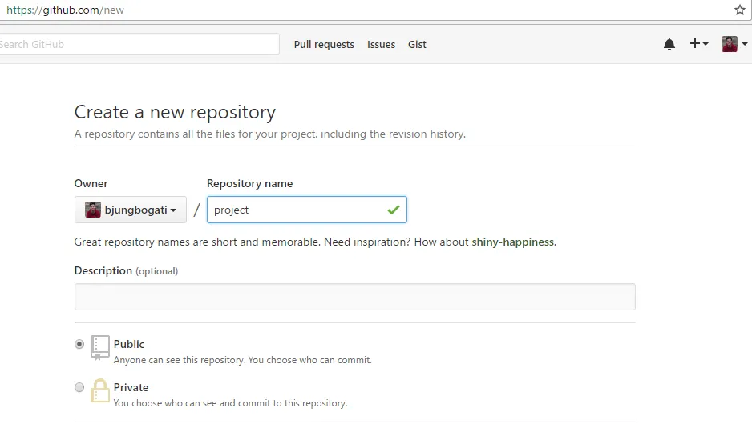
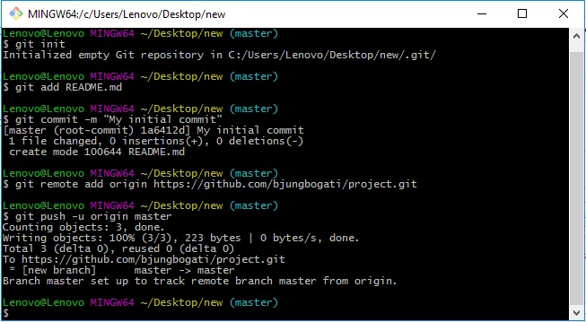

Git is a version control system aimed to handle project at speed, data integrity, and support for distributed, non-linear workflows.
I’m assuming that you already had worked with your project locally. Let’s say you are currently working with Javascript project with HTML, CSS and js file in your project folder.
- First, you need to make sure that you’d installed Git – Fast Version Control
- Then, log in to your GitHub account and create a new repository.

In the following screen, you can copy it down where you need it if you click the button (right side of the screen) to “clone in desktop”.
From here you run the following commands to “connect” your existing project to your repo on GitHub. (This is assuming that you created your repo on GitHub and it is currently empty)
Go to your local project folder then Right click > Git Bash Here (Open Git in Console Mode). Now, you need to follow the following steps.
- Initialize Git
git initThis will start monitoring your changes (logs in .git folder)
- Add files and folders
git add .. [dot] will add all your files & folders

- Commit Changes
git commit -m "This is my initial commit"This will records changes to the repository
- Add Remote Origin
git remote add origin https://github.com/bjungbogati/my-project-url.gitcreates a new remote called origin located at my-project-url
- See Linked Repo
git remote -vsee your linked repository
git statuschecks the current state of the repository (optional)
- Push Changes to GitHub
git push -u origin master-u is short version of –update
push the commits in the local branch named master to the remote named origin (GitHub)

Note: You’ll also be requested to sign in to GitHub account.
What we did so far?
git init
git add .
git commit -m "This is my initial commit"
git remote add origin https://github.com/username/url.git
git push -u origin master